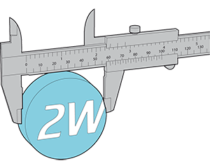
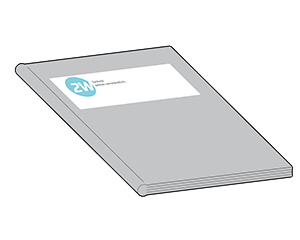

Bitte wählen Sie aus, welche Form von Dokumentation Sie benötigen. Einfach per Klick auf die jeweilige Option.
SERVICE ODER ENDKUNDE – WAS DARF ES BEI IHNEN SEIN?
Service-Literatur

Wünschen Sie eine Dokumentation für Leute, die sich mit Technik auskennen? Zur sogenannten Service-Literatur zählen beispielsweise Anleitungen für Wartung, Reparatur, Einbau und Inbetriebnahme. Aber auch Schaltpläne, Prüfanweisungen, Ersatzteillisten und Montageinformationen gehören dazu.
Endkundenliteratur

Möchten Sie eher technisch weniger versierte Endkunden ansprechen? Dann brauchen Sie eine sogenannte Endkundenliteratur. Darunter versteht man in erster Linie Betriebs-, Bedienungs- und Montageanleitungen.